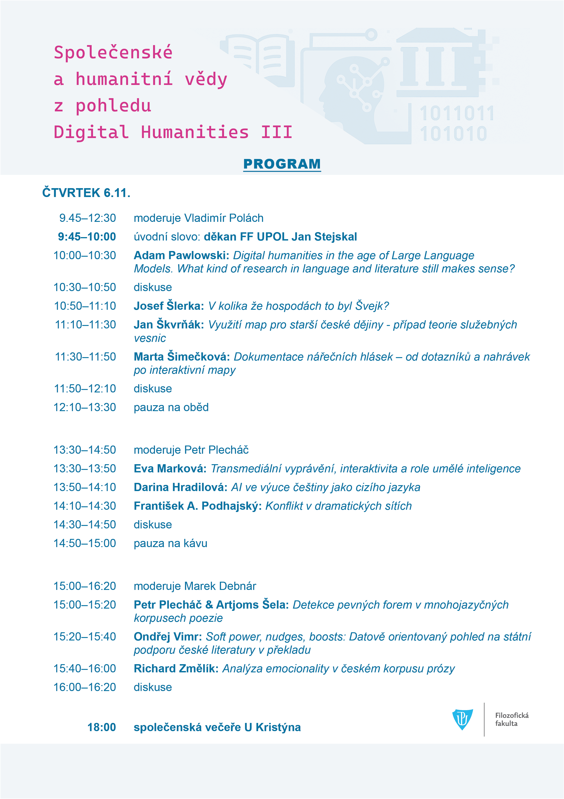
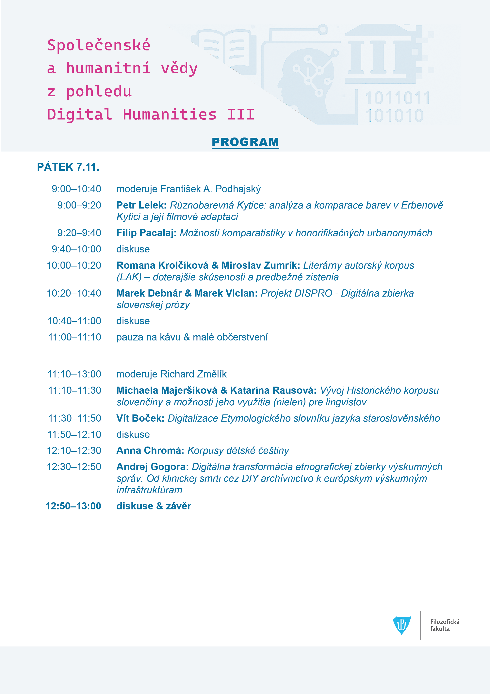

News & Archive
The websites are still under development. All updates will be posted here in the News & Archive section on an ongoing basis. Each author corpus is first published in its language section to make it as fast as possible to work with. This is followed by cartographic models of the fictional topography of Prague and other quantitative models that relate to text segments, etc. The selection of authors you will find in the corpus is provisional. More authors will be added. Considering the large time span (19th-21st century), this is a long-term project, which thus fulfils the criterion of sustainability. If you have problems with viewing the dynamic graphs, try clearing your browser (delete browsing data in browser settings) and trying again. OCR of texts is performed by using ABBY Fine Reader. The map models are created in Adobe Illustrator. If you find any errors, please send a message to: richard.zmelik@gmail.com.
Statement of the Czech Association for Digital Humanities on the evaluation and recognition of research results
- New quantitative models of Winter's novels have been added to the Winter'scorpus.
- New quantitative models of Čech's novels have been added to the Čech'scorpus.
- New quantitative models of Světlá's novels have been added to the Světlá'scorpus.
- New quantitative models of Zeyer's novels have been added to the Zeyer'scorpus.
- New quantitative models of Kolár's novels have been added to the Kolár'scorpus.
- New quantitative models of Mách's novels have been added to the Mách's corpus.
- New quantitative models of Newtonův mozek have been added to the Arbes's' corpus.
- Personal network models of Meyrink's novel have been added.'
- Personal network models of Hašek's novel (1 and 2 part) have been added.'
- GIS models of Hašek's novel (1 and 2 part) have been added.'
- GIS models of Sova's novel have been added.'
- Personal network models of Sova's novel have been added.'
- Personal network models of Čapek-Chod's novel have been added.'
- GIS models of Jirásek's novel have been added.'
- Personal network models of Herrmann's novel have been added.'
- Personal network models of Mrštík's novel have been added.'
- Personal network models of Jirásek's novel have been added.'
- Personal network models of Čech's novel have been added.'
- Personal network models of Svetla's novel have been added.'
- Personal network models of Zeyer's novel have been added.'
- Personal network models of Kolar's novel have been added.'
- Personal network models of Neruda's novel have been added.'
- Personal network models of Mácha's novel have been added.'
- GIS models of Čech's novel have been added.'
- GIS models of Světlá's novel have been added.'
- GIS models of Zeyer's novel have been added.'
- GIS models of Kolar's novel have been added.'
- GIS models of Neruda's novel have been added.'
- GIS models of Meyrink's novel have been added.'
- GIS models of Mrštík's novel have been added.'
- GIS models of Macha's novels have been added.'
- New quantitative models have been added to the Arbes's' corpus.
- Here is a tool available for creating concordances for Czech texts: https://zenodo.org/records/19554419
- Three quantitative models of Arbes's novels were added to the corpus.
-

- The RAG agent has been updated to a new version.
- New GIS models are being added into Arbes's subcorpus.
- A Text Research item has been added to each author's menu. This is an RAG agent that searches through relevant texts and answers basic questions, such as which characters appear in a given prose work, what their names are, how the characters interact with each other, how the prose ends, or what the emotionality of a particular character's speech is, etc.
- New GIS models are being added into Arbes's subcorpus.
- A simple text OCR feature has been added. You can find it in the main menu on the home page.
- The new quantitative models of text segments was added to Arebs's corpus.
- New GIS models and text-segments models are being added into Arbes's subcorpus.
- A new website with an application form has been created for the next year. You can find the link on the main page, in the top menu as CfP.
-
Program of conference Humanities and Social Sciences from the Perspective of Digital Humanities


- New functionality Typology of Movement has been added to the Karel Hynek Mácha, Jakub Arbes and Jaroslav Hašek corpus.
- New functionality Charcter Networks has been added to the Jakub Arbes corpus.
- Cumulative frequency graphs was added to the Sentiment Analysis part of the corpus.
- New data on the frequency of occurrence of text segments has been added to the Jakub Arbes corpus.
- Scripts have been fixed to display images correctly in GIS.
- New GIS data was added into corpus.
- New data of text segments and GIS was added into corpus.
- In 2025, the global conference DH2025 will take place in Lisbon. This project was presented as part of the mini-conference "Comparative Literature Goes Digital."
- Data in the area of quantitative models of text segments, narrative rhythm etc. and GIS are being added on an ongoing basis.
- New features have been added to the Sentiment Analysis section: sentiment analysis graph line and MDS models. For more informations see Info in main menu bar.
-
On November 6–7, the Department of Czech Studies at the Faculty of Arts, Palacký University Olomouc, will host the third annual conference Humanities and Social Sciences from the Perspective of Digital Humanities.

- MSCA DOCTORAL FELLOWSHIP 2025


- The Frequency of Lemmas search function has been added to the "The Whole Corpus" section. The output table shows the relative frequency of the searched lemma for the authors in the corpus.
- The Stylometry entry has been added to all author corpora. It contains dendograms and network graphs from Gephi.
- Revision of the corpus, some missing parts were fixed and security modifications were made to the scripts.
- The novels "Mesiáš I" by Jakub Arbes was added into corpus.
- Readability of text added. Three measures are used that statistically express the degree of difficulty of the text with respect to reading "literacy", which is determined by the level of formal education (see Info for more).
- The novels "Mlýn na mumie" and "Pérák" by Petr Stančík was added into corpus.
- The GIS of "Aspoň se pousměj" by Jakub Arbes was added into corpus.
- The GIS of "Můj přítel vraj" by Jakub Arbes was added into corpus.
- Added Chat Bot on Home Page.
- Added lexical diversity chart of all texts in corpus.
- Added statistic charts of Residents and Houses in Prague Districts.
- Added CQL for each author and for the whole corpus.
- The novels from "Kniha novel a povídek IV" by Jakub Arbes and the novel "Štrajchpudlíci" was added in the language corpus.
- A new website layout has been uploaded and corrected some errors in scripts. Missing databases have been added and GIS models are gradually being extended.
- The novels "Poslední dnové lidstava" by Jakub Arbes was added in the language corpus.
- Humanities and social sciences from the perspective of digital humanities - conference at Palacký University in Olomouc
- The novels from "Knihy novel a povídek I" by Jakub Arbes was added in the language corpus.
- The novels "Duhový bod nad hlavou" & "Lilie v úpalu slunečním" by Jakub Arbes was added in the language corpus.
- The novels "Advokát chuďasů" & "Lotr Gólo" by Jakub Arbes was added in the language corpus.
- The CSV file was update.
- GIS of "Etiopská lilie" by Jakub Arbes was adedd to corpus.
- Overview of the topics of the conference Humanities and Social Sciences from the perspective of Digital Humanities II.
Click here to enlarge.
- The project was presented at the "Night of Scientists".
- The novel "Na košatkách" by Karolina Světlá was added in the language corpus.
- Corpus-wide statistical values have been corrected. A search for basic statistic measures for individual authors has been added to the Basic Satistic page.
- The novel "Škapulíř" by Karolina Světlá was added in the language corpus.
- The novel "Mladá paní Zapletalová" by Karolina Světlá was added in the language corpus.
- The novel "Závěrka aneb ztížená možnost happy-endu" by Miloš Urban was added in the language corpus.
- The novel "Perunův den" by Daniela Hodrová was added in the language corpus.
- The novel "Poslední Češka" by Karolina Světlá was added in the language corpus.
- The novel "Anděl západního okna" by Gustav Meyrink was added in the language corpus.
- The novel "Zelená tvář" by Gustav Meyrink was added in the language corpus.
- The novels from "Knihy novel a povídek III" by Jakub Arbes was added in the language corpus.
- The novels from "Knihy novel a povídek II" by Jakub Arbes was added in the language corpus.
- GIS maps of Arbes's novels was updated.
- The CSV file was update.
- The CSV file of corpus was grounded in Open Data.
- A new page with a basic statistical overview has been added to the main menu.
- The novel "Návrat starého varana" by Michal Ajvaz was added in the language corpus.
- The novel "Moderní upíři" by Jakub Arbes was added in the language corpus.
- The novel "Točité věty" by Daniela Hodrová was added in the language corpus.
- The novel "Vražda v hotelu Intercontinental" by Michal Ajvaz was added in the language corpus.
- The novel "Příběh dušičkový" by Ignát Herrmann was added in the language corpus.
- The novels "Anděl míru III" & "Anděl míru IV" by Jakub Arbes was added in the language corpus.
- The novel "Továrna na maso" by Miloš Urban was added in the language corpus.
- The size of the corpus exceeded 5 million tokens.
- The novel "Pekla zplozenci" by Josef Jiří Kolár was added in the language corpus.
- The novel "Luxemburská zahrada" by Michal Ajvaz was added in the language corpus.
- The novel "Historie o doktoru Faustovi" by Ignát Herrmann was added in the language corpus.
- Dispersion of Narrative Segments on the Timeline has been added.
- Scatter plots of toponyms has been added.
- The novel "Pražská vizitka" by Gustav Meyrink was added in the language corpus.
- The novel "Město vidím" by Daniela Hodrová was added in the language corpus.
- The second year of the "Humanities and Social Sciences from a Digital Humanities Perspective" conference will take place on 8-9 November at Palacky University in Olomouc.
- The novels "Anděl míru I, II" by Jakub Arbes was added in the language corpus.
- Frequency models of the text segments of "Křivoklad" by K. H. Mácha was added to the web environment.
- Literary cartographic models, GIS model, density of locations models and character wandering networsk models of "Křivoklad" by K. H. Mácha was added to web environment.
- Literary cartographic models, GIS model, frequency models of the text segments of "Márinka" by K. H. Mácha was added to web environment.
- The novel "Proces" by Franz Kafka was added in the language corpus.
- The short story collection "Z pražských zákoutí" (ZPZ) by Ignát Herrmann was added in the language corpus.
- The novel "Osudy dobrého vojáka Švejka za světové války (2. díl)" by Jaroslav Hašek was added in the language corpus.
- A new words in context tool has been added to all corpus.
- The novel "Pole a palisáda" by Miloš Urban was added in the language corpus.
- The novel "Temno" by Alois Jirásek was added in the language corpus.
- The novel "Otec Kondelík a ženich Vejvara" by Ignát Herrmann was added in the language corpus.
- The novels "Nový epochální výlet pana Broučka, tentokráte do XV. století" and "Pravý výlet pana Broučka do Měsíce" by Svatopluk Čech was added in the language corpus.
- The novel "Temno" by Alois Jirásek was added in the language corpus.
- The novel "Agitator" by Jakub Arbes was added in the language corpus.
- The novels "Legenda pražská, "Legenda toledská" and "Legenda slovesnká" was added in the language corpus.
- Graphs of secred spaces was added in Arbes's, Macha's and Hašek's corpus.
- Research Fellowship: Building a Literary Corpus of the 19th Century Czech Prose.
- The novel "Adamité" by Jakub Arbes's 'was added in the language corpus.
- In 9. november the conference "Humanities and Social Sciences from a Digital Humanities Perspective" was held at Czech Deparetment of Palacky University in Olomouc. The conference was co-organized by Centre for Digital Humanities in Literary and Book Studies.
- The Novel "Zborcené harfy tón" by Jakub Arbes was added in the language corpus.
- A new tool Clusters of Sentiment is being added. You find them in section Sentiment Analysis & Word Clouds.
- The novel "Anna a Marie" by Jakub Arbes's 'was added in the language corpus.
- The novel "Dva barikádníci" by Jakub Arbes's 'was added in the language corpus.
- The novels "Santiniho jazyk" and "Boletus Arcanus" by Miloš Urban was added in the language corpus.
- The novels "Hastrman I", Hastrman II and "Michaela" by Miloš Urban was added in the language corpus.
- Now it is possible to searching the whole corpus (concordance).
- Now it is also possible to search for concordances in the whole author's work in each author's coprus. A link to the search form is located on every Concordance page.
- The novels "Vymírající hřbitov" and "Kandidáti existence" by Jakub Arbes was added in the language corpus.
- The novels "Kašpar Lén mstitel" by Karel Matěj Čapek-Chod was added in the language corpus.
- The novels "Šílený Job" and "Můj přítel vrah" by Jakub Arbes was added in the language corpus.
- The novel "Jan Maria Plojhar" by Julius Zeyer was added into the language corpus.
- The novel "Bílý dominikán" by Gustav Meyrink was added into the language corpus.
- The ability to search for shapes by complete morphological tags was added.
- The novel "Praga Piccola" by Miloš Urban was added into the language corpus.
- The novel "Filozofská historie" by Alois Jirásek was added into the language corpus.
- The novel "Santa Lucia" by Vilém Mrštík was added into the language corpus.
- 5 volumes of Alois Jirásek's novels F. L. Věk have been added and more novels by Jakub Arbes are being added into corpus.
- Added a web page with network model types for Arbes and Hasek. The link can be found on the web page Character Wandering Networks.
- The corpus of Karel Hynek Mácha's novels has been completed.
- The novel "Valpuržina noc" by Gustav Meyrink was added in the language corpus.
- Selected novels by Miloš Urban were included in the language corpus.
- A map showing the gradual destruction of Prague's walls during the 19th century has been added. The link to the map can be found in the description of the page with literary-cartographic models.
- The novel "Druhé město" by Michal Ajvaz was added in to language corpous.
- Added the ability to search for concordances in each of the Tales of "Povídky malostranské".
- The new feature has been added - colocation, TTR, MATR and Entropy.
- The new style of text-segment graphs and piecharts was addded.
- The new websites designe was uploaded.
- Miroslav Vepřek, Vladimír Polách and Richard Změlík grounded The Center for Digital Humanities in Literary and Book Studies at Palacký University in Olomouc.
- Cartographic models of Švejk (1 part) by Jaroslav Hašek have been added.